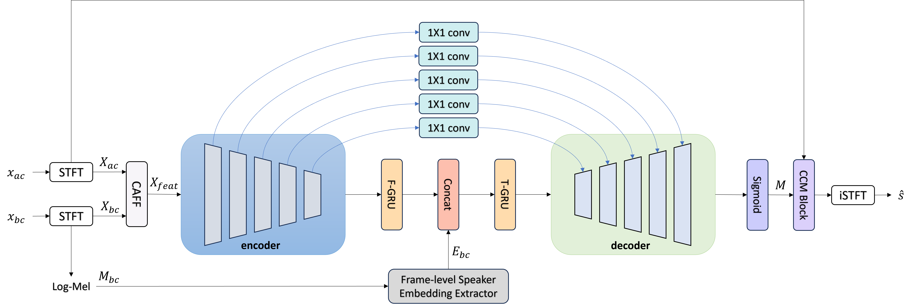

ICLR 2027 submission · under double-blind review
FocusMe: Bone-Conduction-Guided Speech Enhancement
in Challenging Acoustic Scenarios
Anonymous Institution · Paper under double-blind review
Abstract
Recovering a target speech from an air-conduction (AC) mixture is challenging under extreme noise and competing speech. We present FocusMe, a causal multi-modal speech enhancement system that uses synchronized bone-conduction (BC) speech as complementary acoustic evidence and an enrollment-free speaker cue. To fuse AC and BC features, we introduce a Cross-Attention Feature Fusion (CAFF) module, which uses AC features as queries over BC keys and values, then combines the modalities through a learned gate and bounded complex residual. In parallel, an extractor composed of causal dilated residual blocks derives frame-level speaker representations from BC log-Mel features and injects them into the backbone network. We jointly optimize target-speech reconstruction and frame-level speaker classification. Across the tested conditions, FocusMe achieved the best average PESQ, STOI, ESTOI, DNSMOS, and CER, while remaining competitive in SI-SDR.
- Keywords
- bone conduction speech · multimodal speech enhancement · multi-task learning · speaker representation
Method Overview

Audio Demo
Each row shows one test mixture. Clean target is the reconstruction reference, Noisy AC mixture is the system input and Bone conduction is the synchronised BC recording. The five AC–BC baselines follow, with FocusMe last. Headphones recommended.